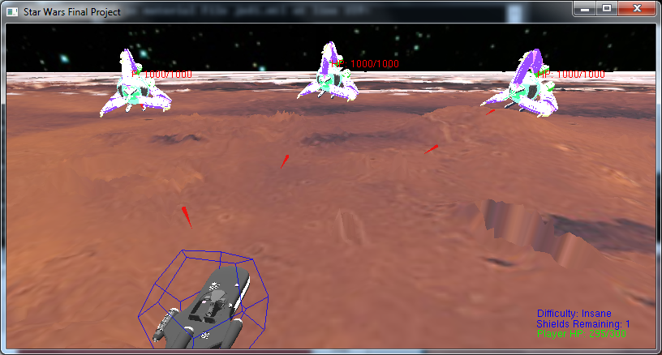
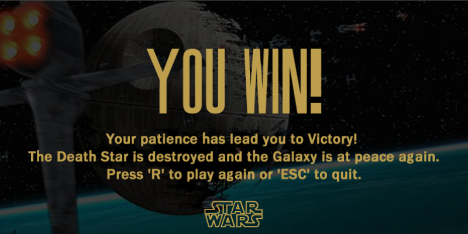

Game Play
Controls
- key 'a' : move left
- moves the landspeeder towards the left.
- key 'd' : move right
- moves the landspeeder towards the right.
- mouse left key : attack
- the landspeeder will fire a laser towards the location clicked with 100% accuracy. if the key is held down it will continuously fire.
moving left..
moving right...
Difficulty Modes
- key '1' : easy
- This is the easiest mode. Most enemy units' HP and attack probability reduced by half.
- key '2': normal
- This is the default mode. Enemy units' HP and attack probability will be the default.
- key '3' : hard
- This is a slightly harder mode. Most Enemy units' HP and attack probability will be multiplied by 1.5.
- key '4' : insane
- This is an impossible to beat mode. Most Enemy units' HP and attack probability will be multiplied by 5.
easy mode...
normal mode...
hard mode...
insane mode...
the impossibility of insane mode...
Shield
- key 's' : enable shield
- This enables the shield. Pressing 's' while the shield is on will not extend the current sheild's time.

Game Over
- key 'r' : restart game
- Restarts the game from level 1.
game over on land based levels...
game over on the death star level...
game over by beating the game...

*graphical art in the background was from http://gfx-3d-model.blogspot.com/2008/07/deathstar.html